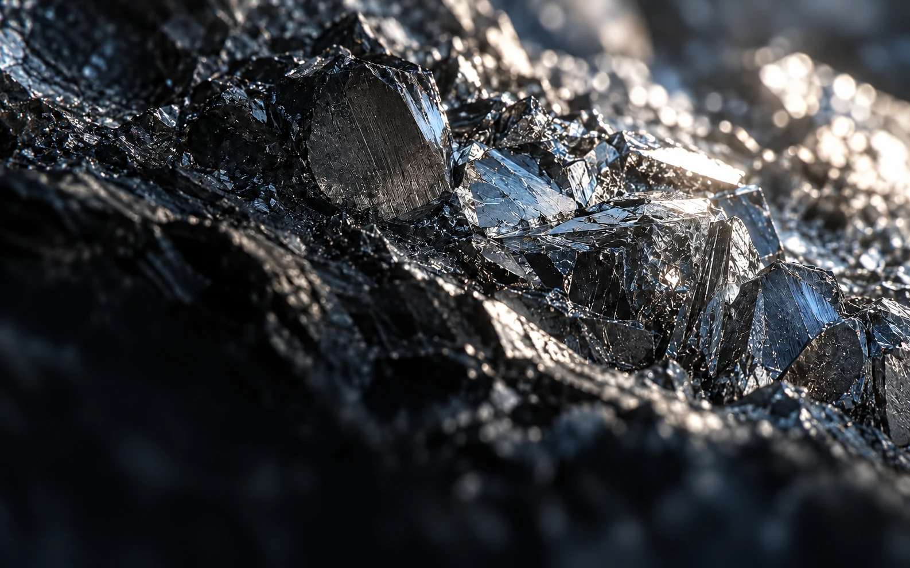
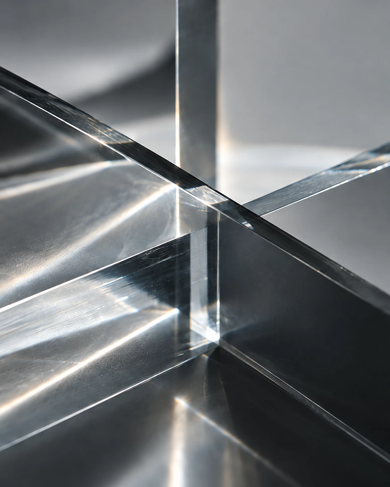

Co-FounderMedical Research Lead
K.H. Mun
임상·기초의학

501 Lab은 의학과 공학을 연결하는 연구개발 기업입니다. 의료의 미충족 수요에서 출발해 문제 분석·설계·실험을 수행합니다.
Medicine × Engineering
연구 방식
의학과 공학의 관점을 함께 놓고, 구성원이 문제 분석·설계·실험을 직접 수행합니다.

아직 충족되지 않은 의료 수요를 살피고, 연구로 다룰 문제를 정의합니다.
정의한 문제에 적용할 공학적 디자인과 기법을 검토합니다.
설계한 접근을 실험으로 확인하고, 결과를 검토합니다.
구성원
서로 다른 전공의 구성원이 문제를 함께 정의하고, 설계와 실험을 이어갑니다.
Co-FounderMedical Research Lead
임상·기초의학
Co-FounderMaterials Engineering Lead
재료·금속공학